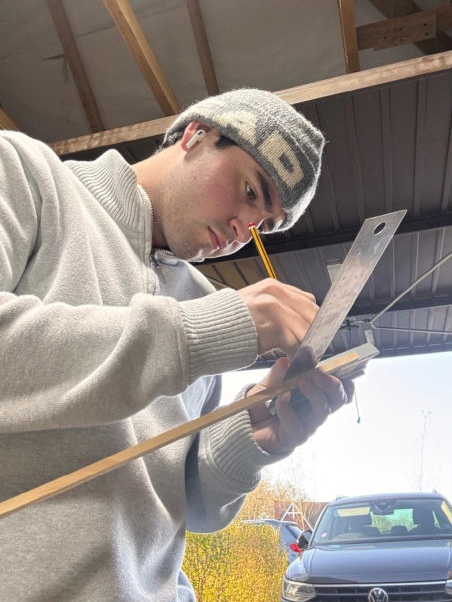
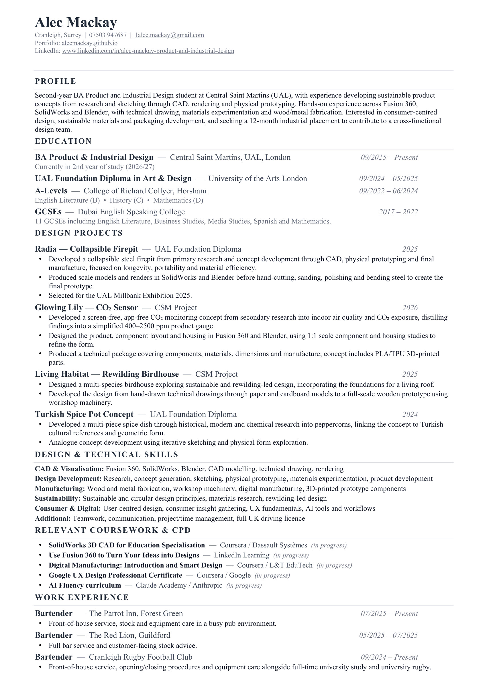

Product & Industrial Design student at Central Saint Martins, London.
I design with longevity in mind — objects meant to last years, not be replaced within them. Currently in my second year of study and seeking a 12-month industrial placement for 2027/28.

I design with longevity in mind — objects meant to last years, not be replaced within them. That interest in circular and socially critical design shows up in how I work: I’m strongest at physical prototyping, where an idea meets reality and either holds up or it doesn’t.
I’m building CAD fluency alongside it, in Fusion 360, SolidWorks, and Blender, backed by sketching, technical drawing, and hands-on wood and metalwork.
What I want from a placement year is time in a studio long enough to watch decisions get made by people who’ve done this for years — not just at concept stage, but the harder calls around materials, manufacture, and what actually makes something last.
I want to bring that back into my own work as a designer.
